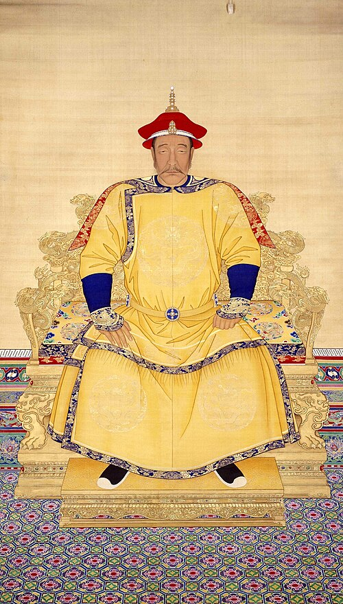

年号
天命
- 名
- 爱新觉罗·努尔哈赤（塔克世长子）
- 庙号
- 太祖
- 谥号
- 承天广运圣德神功肇纪立极仁孝睿武端毅钦安弘文定业高皇帝
- 在世
- 1559年–1626年
- 在位
- 1616年–1626年 · 共 11 年
万历十一年以遗甲十三副起兵，用三十余年吞并建州与海西各部，最后一个对手叶赫到万历四十七年才亡。天命元年在赫图阿拉称汗时，八旗已经编成，满文也已创制，唯独汗位继承没有立下规矩，他死后由四大贝勒协商推举。
清朝
1616年建号天命，1912年退位宣统。十二位皇帝，以官书原文为底本，逐条整理。
全库只有部分条目已对到可回查的原文。请优先阅读每条主张的引文和出处，并将其他内容视为待继续完善的研究草稿。